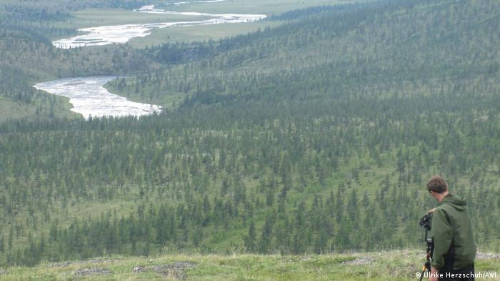

SCIENCE
InSight mission on Mars begins to say goodbye to Earth
The NASA InSight research mission has provided our first look at the red planet's interior. Now, the lander is set to power down by December 2022, bringing the four-year-long scientific endeavor to a successful end.
The InSight lander touched down in the Elysium Planitia region of Mars in November 2018 with the goal of studying the planet's deep interior for the first time.
"We know a lot about the surface of Mars, a lot about its atmosphere and ionosphere, but we don't know much about what goes on below its surface," said InSight principal investigator Bruce Banerdt at the start of the mission.
InSight's primary goal was to better understand how rocky planets are formed and evolved. Equipped with a suite of scientific instruments, it was designed to accomplish the mission's goals in its first Mars year ― nearly two Earth years.
Now, after a long and successful mission, the InSight Lander will steadily power down, a process that will be complete by the end of 2022.
Listening to Mars rock
The InSight lander had a number of scientific instruments on board to measure geological and meteorological features on Mars.
One of them is a highly sensitive seismometer, which recorded more than 1,300 Mars quakes. These ranged from tiny tremors, barely more than background noise, to a handful of quakes that were stronger than magnitude 4. And recently, InSight registered a magnitude 5 quake, the largest detected on Mars so far.
Seismic waves pass through or reflect off of materials in Mars' crust, mantle and core. Waves traveling through different materials inside a planet generate different speeds and shapes, which are detected by the seismometer.
"With those vibrations, scientists can take the information to reconstruct all the material that those Mars quakes traveled through, thereby seeing the interior of the planet," said Elizabeth Barrett, InSight science and instrument operations lead.
Three studies published in Science in July 2021 gave humanity its first insights into the structure of Mars. They found Mars has a 24 to 72 kilometer (15 to 44.7 mile) thick crust, likely enriched in radioactive elements that produce heat.
Below the crust, the mantel consists of one rocky layer, rather than two like Earth has. Mars' core is very large, roughly 1,830 kilometers in radius, and filled with an iron-nickel liquid.
"By measuring the detailed structure of the interior of Mars, we get a snapshot of what it looked like 4.5 billion years ago," said Banerdt.
Weather reports on Mars
The team also set out to make a detailed record of the weather on Mars. The onboard weather station allowed meteorologists to study the weather at the landing site and relate that to the climate changes on Mars.
The InSight lander was going to measure the surface temperature with its onboard heat flow and physical properties probe. The probe was supposed to drill five meters (16.4 feet) below ground level and measure fluctuations in the surface temperature, however the probe failed to reach that depth.
Still, atmospheric temperatures, pressure, wind speeds and wind directions were successfully recorded with InSight's weather station.
InSight sent its last weather report from western Elysium Planitia on October 25, 2020, recording a temperature high of -4.4 degrees Celsius (24 degrees Fahrenheit) and a low of -95.4 degrees Celsius (-140 degrees Fahrenheit).
The latest Mars weather updates come from NASA's Curiosity rover, located about 600 kilometers (373 miles) north of InSight in the Gale crater.
Powering down the mission
After InSight met the goals of its two-year prime mission in late 2020, NASA extended the mission until December 2022.
However, due to dust accumulation on its solar panels, the InSight lander's electrical power production is dropping. With decreasing power, the team will gradually shut down different instruments until InSight will eventually lose power entirely.
The team were able to buy more time this past summer with an innovative method to clean the solar panels ― using dirt. Using a remote control arm with a scoop attached, they dropped heavy dirt onto the panels, knocking some of the dust off.
Currently, the seismometer is still in operation, but it will be turned off in late summer 2022 to preserve power. This is expected to be the end of the InSight lander's science operations before the craft's power levels are so low that it will simply stop responding by the end of 2022.
"InSight has been fantastically successful. We've gotten more science than we had ever dreamed we would get. We've rewritten the encyclopedia chapter on the interior of Mars," said Banerdt.
The mission has generated enough data for scientists to analyze for decades to come. Answering questions on Mars' structure will help shed light on how all rocky planets and satellites form, including Earth and its moon.
But for now, it's over to NASA's Curiosity Rover to continue the mission on Mars.
SCIENCE
Global heating in the Arctic threatens Siberian tundra
Scientists say rising arctic temperatures are allowing forests to cover unique and treeless Siberian tundra. They predict the tundra may all but disappear.
Researchers based at the Alfred Wegener Institute in Germany have used computer modeling to predict "dramatic losses" of the Siberian tundra by the middle of the millennium due to temperature rises in the Arctic.
In a paper published in eLife, the researchers say that even with an ambitious climate mitigation strategy only about 30% of the Siberian tundra will survive by the year 2500.
The Siberian tundra is a unique ecosystem, or biome. Tundras are typically cold and windy and have so little rain that trees do not grow there. But they are home to many special plants and animals.
Tundra can be found in the Arctic, close to the north pole, but also at the top of mountains and in some parts of Antarctica. Arctic tundras have permafrost, meaning that the ground, although not necessarily the surface, is always below zero degrees Celsius (32 degrees Fahrenheit).

Unique life in the tundra
The specific environmental and climate conditions of the tundra give life to a unique and beautiful, although not very diverse, range of flora and fauna.
Imagine a freezing soil covered with shrubs, moss and small, flowerless green plants — and hardly any animals around. If you are lucky, you might see an arctic fox. If you are less lucky, you might encounter a polar bear.
To the untrained eye, tundras are barren. But the scientists say this barren land is being overrun by a wall of forest trees that is now marching into the area.
The forest begins where the tundra ends. And it is expanding towards the north as temperatures rise, pushing a boundary called the "treeline ecotone."
The forest is expanding north
For their study, the scientists used a model called LAVESI to predict the growth of the Siberian larch forest.
The LAVESI model assesses the number of seeds produced in the area, how they are distributed on the ground and how many will turn into adult trees.
"We can very realistically depict the advancing treeline in a warming climate," said Stefan Kruse, a lead author of the study.
The team says that under the most likely climate change scenario, they expect the tundra to reduce to almost 6% of its current size by the middle of the millennium.
But strong mitigation strategies, like the ones required by current international agreements, may help us preserve a bit more than 30% of the tundra.
Kruse and co-author Ulrike Herzschuh say in their paper that if we manage to protect 30% of the tundra and create large reserves and protected areas, it could allow for tundra species to survive and later recolonize.